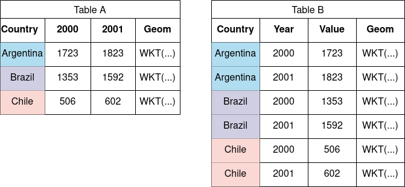
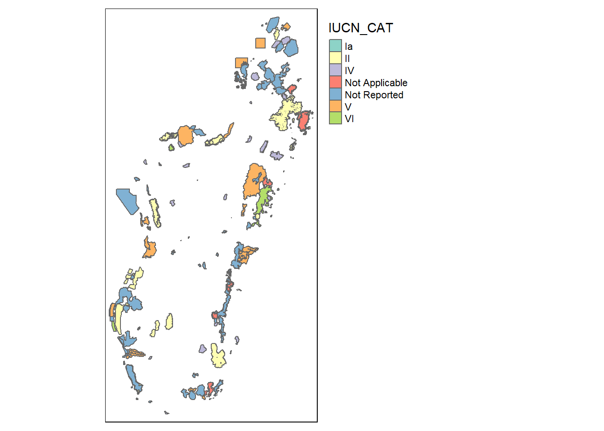

Les bonnes ressources anglophones gratuites sont très nombreuses, très facile à trouver sur le Web. Les grands classiques est R for data science, de Grolemund et Wickham [-@grolemund2022]. On se focalise ici avec deux autres qui sont le plus en lien avec nos sujets :
N’hésitez pas à chercher directement sur le Web en cas de problème. Vous serez souvent conduits vers les forums stackoverflow ou RStudio, qui sont aussi des ressources très précieuses pour résoudre des problèmes très spécifiques.
A noter : un nombre croissant d’utilisteurs utilise VS Code. C’est une alternative intéressante, pour des utilisateurs déjà confirmés :
Librairies R
Plusieurs packages R sont utilisées pour ce projet. Les packages dans R sont des extensions de logiciels qui ajoutent des fonctionnalités spécifiques au langage R de base. Ils sont conçus pour faciliter l’analyse de données, la visualisation, la modélisation statistique, et bien plus encore. Les packages sont comme des boîtes à outils virtuelles qui permettent aux utilisateurs d’effectuer des tâches analytiques avancées sans avoir à réinventer la roue à chaque fois. Ils permettent de gagner du temps et de se concentrer sur la résolution de problèmes spécifiques à son domaine d’étude, au lieu de vous soucier de la programmation de fonctions de base.
Lors de la rédaction de publications scientifiques, il est important de citer correctement les packages R utilisés dans votre analyse. Assurez-vous d’inclure le nom complet du package ainsi que le nom de son auteur ou des auteurs. Zotero et RStudio permettent aisément d’inclure ces citations dans votre analyse.
Mapme.biodiversity
On s’appuie sur le package R {mapme.biodiversity}, développé par la KfW dans le cadre de l’initiative commune MAPME qui associe la KfW et l’AFD. Le package {mapme.biodiversity} facilite l’acquisition et la préparation d’un grand nombre de données (CHIRPS, Global Forest Watch, FIRMS, SRTM, Worldpop…) et calculer un grand nombre d’indicateurs de manière harmonisée (active_fire_counts, biome classification, land cover classification, population count, precipitation, soil properties, tree cover loss, travel time…). Une documentation riche est disponible sur le portail dédié du package en question [@kluve_kfw_2022].
On mobilise aussi les codes d’analyse d’impact développés par la même équipe et mises à disposition dans le dépôt Github: https://github.com/openkfw/mapme.protectedareas. Le code développé par l’équipe est assez complexe. A des fins pédagogiques et pour s’assurer qu’on l’a bien compris, on propose ici une version simplifiée (en cours de développement).
Autres packages
Les autres packages mobilisés dans pour ce cours sont listés dans le bloc de code ci-dessous :
library("tidyverse") # Une série de packages pour faciliter la manipulation de données
Warning: le package 'tidyverse' a été compilé avec la version R 4.2.3
Warning: le package 'ggplot2' a été compilé avec la version R 4.2.3
Warning: le package 'tibble' a été compilé avec la version R 4.2.3
Warning: le package 'tidyr' a été compilé avec la version R 4.2.3
Warning: le package 'readr' a été compilé avec la version R 4.2.3
Warning: le package 'purrr' a été compilé avec la version R 4.2.3
Warning: le package 'dplyr' a été compilé avec la version R 4.2.3
Warning: le package 'stringr' a été compilé avec la version R 4.2.3
Warning: le package 'forcats' a été compilé avec la version R 4.2.3
Warning: le package 'lubridate' a été compilé avec la version R 4.2.3
── Attaching core tidyverse packages ──────────────────────── tidyverse 2.0.0 ──
✔ dplyr 1.1.2 ✔ readr 2.1.4
✔ forcats 1.0.0 ✔ stringr 1.5.0
✔ ggplot2 3.4.2 ✔ tibble 3.2.1
✔ lubridate 1.9.2 ✔ tidyr 1.3.0
✔ purrr 1.0.1
── Conflicts ────────────────────────────────────────── tidyverse_conflicts() ──
✖ dplyr::filter() masks stats::filter()
✖ dplyr::lag() masks stats::lag()
ℹ Use the conflicted package (<http://conflicted.r-lib.org/>) to force all conflicts to become errors
library("readxl") # Pour lire les fichiers excel (Carvalho et al. 2018)
Warning: le package 'readxl' a été compilé avec la version R 4.2.3
library("writexl") # Pour écrire des fichiers excel
Warning: le package 'writexl' a été compilé avec la version R 4.2.3
library("cowplot") # Pour arranger des graphiques en illustrations composées
Warning: le package 'cowplot' a été compilé avec la version R 4.2.3
Attachement du package : 'cowplot'
L'objet suivant est masqué depuis 'package:lubridate':
stamp
library("gt") # Pour des rendus graphiques harmonisés html et pdf/LaTeX
Warning: le package 'gt' a été compilé avec la version R 4.2.3
library("sf") # Pour faciliter la manipulation de données géographiques
Warning: le package 'sf' a été compilé avec la version R 4.2.3
Linking to GEOS 3.9.3, GDAL 3.5.2, PROJ 8.2.1; sf_use_s2() is TRUE
library("wdpar") # Pour télécharger simplement la base d'aires protégées WDPA
Warning: le package 'wdpar' a été compilé avec la version R 4.2.3
library("webdriver") # requis pour installer phantomjs pour wdpar
Warning: le package 'webdriver' a été compilé avec la version R 4.2.3
library("tmap") # Pour produire de jolies carte
Warning: le package 'tmap' a été compilé avec la version R 4.2.3
The legacy packages maptools, rgdal, and rgeos, underpinning this package
will retire shortly. Please refer to R-spatial evolution reports on
https://r-spatial.org/r/2023/05/15/evolution4.html for details.
This package is now running under evolution status 0
library("geodata") # Pour télécharger simplement les frontières administratives
Warning: le package 'geodata' a été compilé avec la version R 4.2.3
Le chargement a nécessité le package : terra
Warning: le package 'terra' a été compilé avec la version R 4.2.3
terra 1.7.29
Attachement du package : 'terra'
L'objet suivant est masqué depuis 'package:tidyr':
extract
library("tidygeocoder") # pour obtenir les coordo GPS d'un point à partir de son nom
Warning: le package 'tidygeocoder' a été compilé avec la version R 4.2.3
library("maptiles") # Pour télécharger des fonds de carte
Warning: le package 'maptiles' a été compilé avec la version R 4.2.3
library("mapme.biodiversity") # Acquisition et traitement des données du projetlibrary("plm") # Linear Models for Panel Data and robust covariance matrices
Warning: le package 'plm' a été compilé avec la version R 4.2.3
Attachement du package : 'plm'
Les objets suivants sont masqués depuis 'package:dplyr':
between, lag, lead
library("broom") # pour reformater simplement les rendus de tests statistiques
Warning: le package 'broom' a été compilé avec la version R 4.2.3
library("stargazer") # Reformater de manière plus lisible les résumé des régressions
Please cite as:
Hlavac, Marek (2022). stargazer: Well-Formatted Regression and Summary Statistics Tables.
R package version 5.2.3. https://CRAN.R-project.org/package=stargazer
library("MatchIt") # Pour le matching
Warning: le package 'MatchIt' a été compilé avec la version R 4.2.3
#library("glm") # Modèles linéaires généralisés (pour le PSM)library("optmatch") # Fonctions d'optimisation du matching
Warning: le package 'optmatch' a été compilé avec la version R 4.2.3
library("did") # Méthode de double différence échelonnée de Callaway et Sant'Anna
Warning: le package 'did' a été compilé avec la version R 4.2.3
library("mapme.biodiversity")library("cobalt") # Tables et graphs d'équilibre des groupes de matching
Warning: le package 'cobalt' a été compilé avec la version R 4.2.3
cobalt (Version 4.5.1, Build Date: 2023-04-27)
Attachement du package : 'cobalt'
L'objet suivant est masqué depuis 'package:MatchIt':
lalonde
Notebook Quarto
Les éléments ci-dessous constituent le support pour les sessions pratiques de cet atelier. Ils sont réalisés en suivant une approche ouverte et reproductible fondée sur un document de type “notebook” [@bedecarrats_alternative_2017]. Un notebook rassemble à la fois :
les lignes de code du programme statistique qui traite les données ;
les résultats (calculs, tableaux, graphiques…) produits lors de l’exécution de ce programme ;
le texte rédigé par les auteurs pour expliquer le processus d’analyse et en interpréter les résultats.
L’intérêt du format notebook, par rapport à l’utilisation de documents distincts pour traiter les données d’une part, et en analyser les résultats d’autre part, est multiple :
favoriser la reproductibité de la recherche (tout le processus de traitement, analyse, interprétation peut être inspecté et dupliqué) ;
faciliter le travail du chercheur (une interface pour tout faire) ; et
assurer les meilleures pratiques de collaboration (utilisation pour le versionnage, partage et fusion des travaux les outils performants développés en programmation informatique).
Les traitements sont réalisés en R, qui est à la fois un logiciel et un langage open sources dédiés à l’analyse de données. Les traitements R sont inclus dans un document Quarto, un format qui exécute aussi bien des codes en R, Python, e rendus dans différents formats (LaTeX/PDF, HTML ou Word).
La mise en forme des rendus Quarto est paramétrable. Ici, on a notamment placé un argument code-fold: true dans le fichier _quarto.yml. Cela fait que les blocs de code ne sont pas visible dans le rendu web par défaut : il faut cliquer sur “code” pour les déplier.
Import des données
En très bref :
Pour les fichiers excel ou csv, dans le volet “files” du panneau en bas à droite de l’interface Rstudio, cliquer sur le fichier en question et utiliser l’assistant d’import.
Pour les autres fichiers, se référer à l’aide ou chercher sur internet.
Voir cette page pour un topo sur les imports. [#TODO:Préciser l’url]
Principes élémentaires de manipulation de données en R
On se focalise ici sur quelques aspects qui peuvent être requis pour la manipulation du code et à la marge. Points à traiter :
Le signe <- correspond à l’assignation d’une valeur à une variable. Il est presque équivalent à =, avec quelques différences dans certaines circonstances particulières, qui fait qu’on privilégie toujours <-.
# Ce qui suit un dièze n'est pas exécuté. On appelle ça un commentaire.# On commence par faire une opération simple3+4
[1] 7
# Ce qui équivaut à :a <-3b <-4a + b
[1] 7
# Et on peut également stocker le résultat dans une nouvelle variablec <- a + bc
[1] 7
Du fait de l’assignation “<-”, les valeurs chiffrées sont automatiquement associées à l’objet. Ce dernier apparaît dans la fenêtre environnement. De manière générale, vous allez retrouver dans cette fenêtre tous les objets que vous avez créés : que ce soit de simples variables, des tableaux, des fonctions, des objets graphiques, etc.
R est constitué de fonctions. De nombreuses fonctions prédéfinies sont contenues dans la base de R ou dans des packages qu’on ajoute (qu’on verra plus tard). La meilleure manière de comprendre ce qu’est une fonction est d’en créer une soi même.
# On crée une fonction "ajoute" qui prend deux paramètres. # x est un premier et y est celui qu'on ajouteajoute <-function(x, y) { x + y}# On peut maintenant utiliser cette fonctionajoute(3, 4)
[1] 7
# On peut effectuer les mêmes opérations. Les valeurs a et b sont encore # en mémoire, donc on peut faire :ajoute(a, b)
[1] 7
c <-ajoute(a, b)c
[1] 7
ajoute(c, a)
[1] 10
Les fonctions disposent d’une documentation qu’on peut explorer en utilisant l’aide.
Exercice pratique sur la recherche d ’aide.
Le signe %>% est un “tuyau”. On peut le lire à haute voix comme “ensuite”. Par exemple :
library(tidyverse)d <- a %>%ajoute(b) %>%ajoute(c)
na.rm : Les valeurs manquantes, notées NA dans R (certaines peuvent avoir pour valeur NaN). On utilise na.rm pour les éluder dans les opérations simples.
# On commence par créer les variables (les colonnes du tableau)noms <-c("John", "Jack", "Cindy", "Samantha")sexe <-c("homme", "homme", "femme", "femme")ages <-c(42, 57, 24, NA)poids <-c(87, 73, NA, NA)tailles <-c(174, 198, 192, 164)# On les rassemble dans un tableau ma_table <-data.frame(noms, sexe, ages, poids, tailles)# On peut faire une moyenne sur les tailles car on a toutes les variablesmean(ma_table$tailles)
[1] 182
sum(ma_table$tailles)
[1] 728
# Mais la moyenne ne fonctionne pas immédiatement sur les poids ou les âges# car il manque des variablesmean(ma_table$ages)
[1] NA
sum(ma_table$poids)
[1] NA
# Il faut préciser qu'il faut omettre les variables manquantesmean(ma_table$ages, na.rm =TRUE)
[1] 41
sum(ma_table$poids, na.rm =TRUE)
[1] 160
Le “tidyverse” st un ensemble cohérent de packages R conçus pour la manipulation, la visualisation et l’analyse de données de manière cohérente et efficace. Il a été développé pour simplifier le flux de travail de l’analyse de données et pour rendre le code plus lisible et plus facile à comprendre.
Le “tidyverse” comprend plusieurs packages populaires, et notamment dplyr. Ce dernier est très utile pour épurer les données lorsque vous travaillez sur des tableaux (et donc sur des tables attributaires). Il est utilisé pour la manipulation de données, notamment le filtrage, la sélection, le regroupement et la création de nouvelles variables. Voici certaines de ses fonctions fondamentales :
- select : choisir des colonnes
- filter : choisir des lignes
- mutate : modifier des valeurs
- group_by : variables pour des tris
- créer des filtres : summarise
# Un exemple qui combine ces opérationsma_table %>%filter(!is.na(ages)) %>%select(sexe, ages, tailles, poids) %>%group_by(sexe) %>%summarise(nb_pers =n(),somme_poids =sum(poids, na.rm =TRUE),taille_max =max(tailles, na.rm =TRUE),age_moy =mean(ages, na.rm =TRUE))
Cette opération exige toutefois que la variable d’identification soit écrite de manière identique dans les deux jeux de données.
Supposons que l’on travaille sur les aires protégées à Madagascar et que l’on dispose de deux jeux de données provenant de sources différentes. On a alors des informations complémentaires que l’on souhaite fusionner en un seul tableau via le nom de l’aire protégée. Il faudra veiller à ce que les noms aient la même écriture (pas de différences avec des majuscules, des abréviations ou des noms raccourcis)
Pivots : passer un tableau de long en large
Les données tabulaires peuvent être structurées de deux manières différentes, généralement appelées format long et format large.
La plupart des gens sont plus familiers avec le format large, car c’est le format que nous, en tant qu’humains, utiliserions naturellement pour structurer nos données lorsque nous travaillons avec des feuilles de calcul, par exemple dans Excel.
Dans le format large, l’identifiant d’une observation est inclus exactement une fois et ne se répète pas (voir Tableau A).
Dans le format long, l’identifiant ainsi que d’autres variables de qualification peuvent être répétés plusieurs fois pour identifier de manière unique chaque observation dans une seule ligne (voir Tableau B).
 Fig. 1 : Exemple d’un tableau large (A) et long (B) contenant les mêmes données.
Le format long est souvent nécessaire lors de l’interaction avec des ordinateurs, par exemple pour créer des graphiques avec ggplot2.
Le contenu des deux formats est exactement le même, c’est juste que l’un est plus convivial pour les humains que pour les ordinateurs.
Si vous êtes familiers avec le tidyverse de R, vous avez peut-être aussi entendu parler du terme données bien structurées.
En ce qui concerne les données tabulaires, vous pouvez imaginer que les données bien structurées font référence à des données dans un tableau long qui remplit naturellement les exigences suivantes :
Chaque variable a sa propre colonne.
Chaque observation a sa propre ligne.
Chaque valeur a sa propre cellule.
Le Tableau A, en ce sens, n’est pas propre puisque la variable de l’année n’est pas présente dans sa propre colonne, mais au lieu de cela, elle est répartie dans deux colonnes différentes. Le Tableau B est un format long où chaque variable est présente dans exactement une colonne. En ce sens, chaque ligne individuelle représente exactement une observation, c’est-à-dire l’observation d’un pays spécifique pour une année spécifique.
# Création de vecteurs pour les années et les paysannees <-c(2000, 2001)pays <-c("Argentina", "Brasil", "Chile")# Création de la matrice (alias liste de vecteurs) pour les valeurs Xvaleurs_ex <-matrix(c(1723, 1823, 1353, 1592,506, 602), nrow =3, byrow =TRUE) # Assurez-vous que les valeurs sont dans le bon ordre# Créez un data frame en format "large"df_large <-data.frame(Annee = annees, Argentina = valeurs_ex[1, ], Brasil = valeurs_ex[2, ], Chile = valeurs_ex[3, ])# Convertir en format "long" df_long <- df_large %>%pivot_longer(cols =-Annee, names_to ="Pays", values_to ="Valeur")
Map : appliquer des opérations successives
La fonction map est une fonction puissante du package purrr du tidyverse en R. Elle permet d’appliquer une fonction à chaque élément d’une liste (ou d’un vecteur) et renvoie une nouvelle liste (ou vecteur) contenant les résultats de ces applications. C’est utile lorsque vous souhaitez effectuer des opérations répétitives sur des éléments de données, comme appliquer une fonction à chaque élément d’une liste ou d’un vecteur.
# Utilisation de map pour multiplier les valeurs par 2df_long_2 <- df_long %>%group_by(Pays) %>%mutate(Valeur_multipliee =map_dbl(Valeur, ~ .x *2))
Unnest : déplier des listes imbriquées (développer)
Un point important est relatif aux types des variables : numérique, catégorielles, textes, dates, spatiales… En général, les opérations ne peuvent concerner que des variables du même type. Les fonctions sont souvent contraignantes quant aux types des variables qu’elles prennent comme arguments.
# Exemple avec une variable numérique et une variable caractèrex <-5y <-"hello"# Tentative d'addition de deux variables de types différents#resultat <- x + y
Pour une analyse plus approfondie, voir juba.
Produire des cartes simples avec R
(voir car pour l’instant pas de shp Vahatra)
# Les librairies requises library(sf) # pour traiter des données spatialeslibrary(tmap) # pour faire des cartes# Charger une carte des données WDPA # On regarde si les données WDPA sont disponibles sur l'ordinateur qui exécuteif (file.exists("data/WDPA/WDPA_Oct2023_MDG-shapefile.zip")) {# Si oui, on charge WDPA_Mada <-wdpa_read("data/WDPA/WDPA_Oct2023_MDG-shapefile.zip")} else {# Si non, on télécharge depuis protectedplanet WDPA_Mada <-wdpa_fetch("Madagascar", wait =TRUE,download_dir ="data/WDPA") }# On projette la cartetm_shape(WDPA_Mada) +tm_polygons(col ="IUCN_CAT") +tmap_options(check.and.fix =TRUE) +# Parce qu'on a quelques erreurs topotm_layout(legend.outside =TRUE)

(projection de la carte, obligatoire de faire st_make_valid ?) ## Produire des graphiques avec R
On utilise le package ggplot, avec la syntaxe suivante.
# On réalise un graphique simpleWDPA_Mada %>%ggplot(aes(x = IUCN_CAT, y = REP_AREA)) +geom_col()